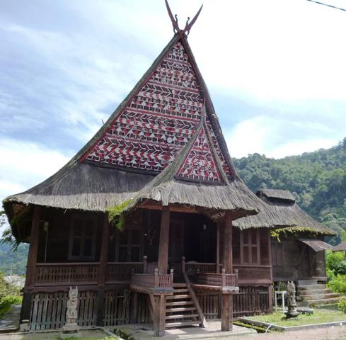
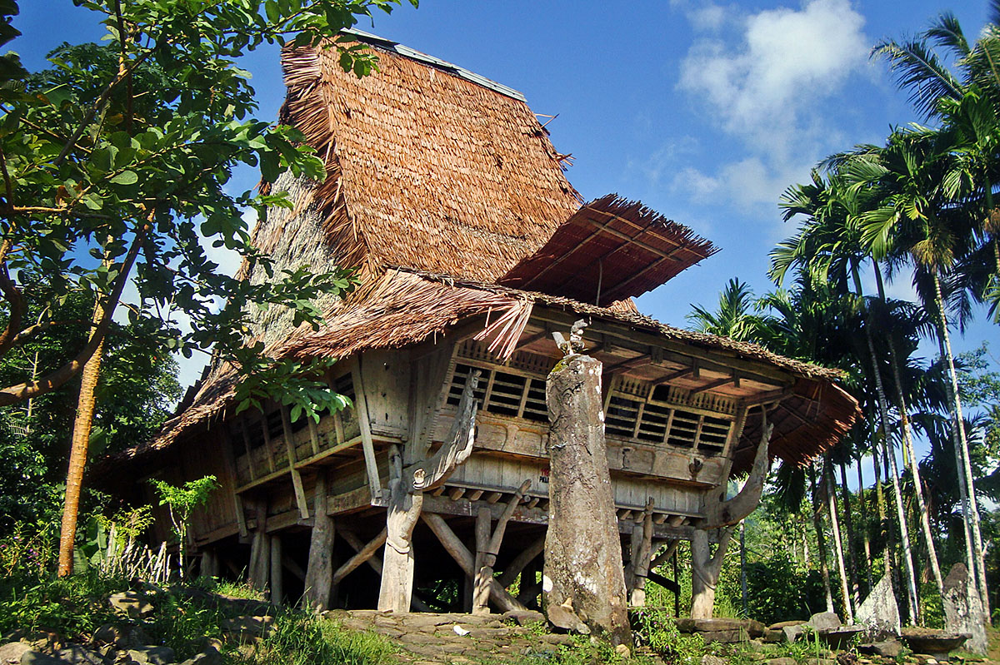
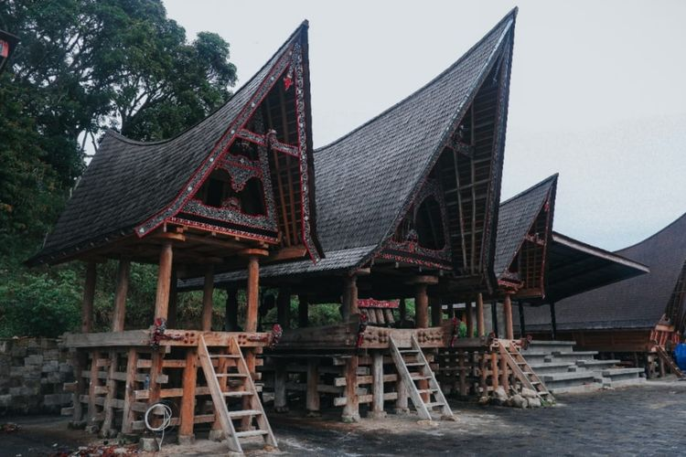
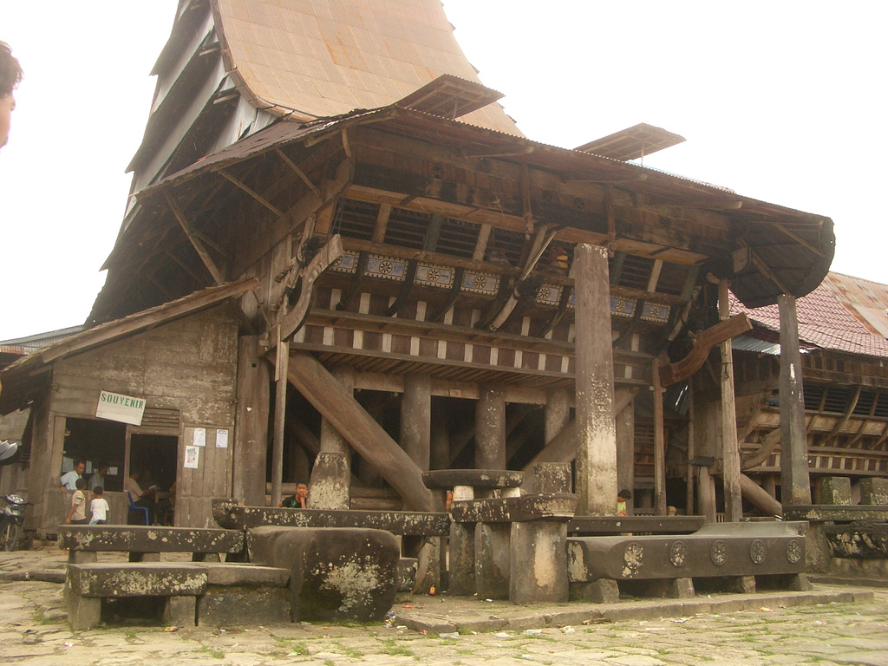
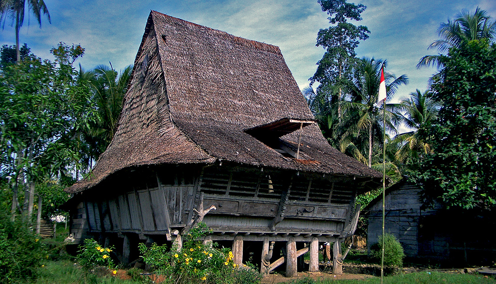

Rumah Bolon
Bagas Godang

Siwaluh Jabu
Omo Niha

Rumah Pakpak

Rumah Bolon Pamatang Purba
Rumah Gorga
Omo Sebua
Omo Hada Laraga

Rumah Adat Puri Melayu Sri Menanti
Selamat datang di website rumah adat Sumatera Utara. Di bawah ini adalah macam-macam rumah adat Sumatera Utara:
|
Rumah Bolon |
 Bagas Godang |
Siwaluh Jabu |
|
 Omo Niha |
Rumah Pakpak |
Rumah Bolon Pamatang Purba |
|
 Rumah Gorga |
 Omo Sebua |
 Omo Hada Laraga |
|
Rumah Adat Puri Melayu Sri Menanti |